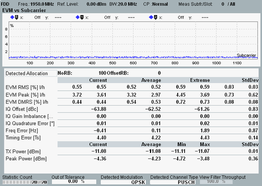

View EVM vs Subcarrier
The view shows a diagram and a statistical overview of results per slot.

EVM vs Subcarrier view
The diagram shows the EVM in all allocated subcarriers of the measured slot. Only a single carrier is analyzed. For signals with carrier aggregation, you can select which carrier is measured (setting "Measurement Carrier").
The values are RMS averaged over the SC-FDMA data symbols in the subcarrier.
For a description of the statistical overview, see "View TX Measurement and BLER".
For the parameters at the bottom, see "Common View Elements".
For query of the diagram contents via remote control, see "EVM Results (Traces)".